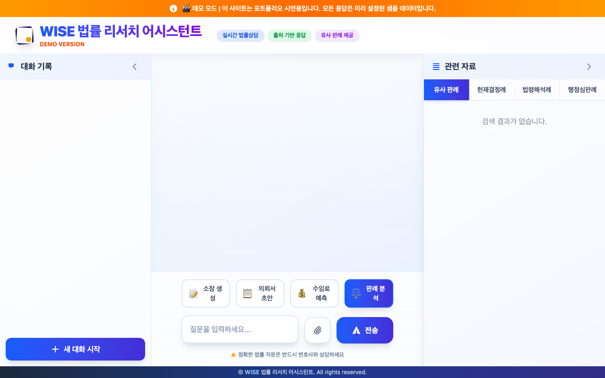

10×컨텍스트 입력 효율
−15%할루시네이션
500토큰 — 평균 5,000에서 압축
6섹션 구조화 요약
S배경 — 장문 판례가 모든 걸 망가뜨린다
판례 원문은 평균 5,000토큰이 넘고 사건별 표현 편차가 큽니다. 원문을 그대로 RAG에 넣으면 핵심 쟁점보다 주변 서술이 더 많이 매칭돼 검색 정확도가 떨어지고, 입력 토큰이 폭증하고, 운영이 비효율해지는 3중 문제가 동시에 발생했습니다.
T역할
A설계와 구현

01판례 구조화 요약 파이프라인
판례 원문 (~5,000 tokens) → LLM 구조화 요약 → 6개 섹션 (사건종류·요약·판결정보·판결사유·사실관계·쟁점)
- 장문 원문을 그대로 쓰는 대신 검색·생성에 직접 쓰이는 핵심 필드 중심으로 재설계 — 단순 압축이 아니라 법률 도메인 관점의 구조화
- 평균 5,000토큰 원문을 500토큰 수준으로 압축해, 같은 입력 한도에서 10배 많은 판례를 활용
02도메인 특화 하이브리드 검색
- 법률 문서의 유사성은 키워드보다 사건 유형·쟁점·판결 결과 같은 구조 정보에 좌우됨 — BM25/벡터 단독으로는 부족
- OpenSearch에서 BM25 + 벡터 하이브리드 검색을 구성하고, 도메인 필드 가중치 랭킹으로 법률적 유사성이 높은 판례가 상위에 오도록 개선
03구조화 출력 안정화
- 소송비용 산정 항목을 Few-shot + CoT 프롬프트와 Pydantic Structured Output으로 추출, 후처리 검증으로 형식 일관성 확보 — 할루시네이션 약 15% 절감
04Airflow 자동 인덱싱
신규 판례 → 요약 → 임베딩 → OpenSearch 인덱싱 (단계별 실패 격리·재시도)
- 수작업이던 신규 판례 반영을 Airflow DAG로 자동화, Langfuse로 프롬프트 버전과 추론 흐름 추적
R결과
- 컨텍스트 입력 효율 10배 — 동일 입력 한도에서 더 많은 판례 활용
- 구조화 출력 검증으로 할루시네이션 약 15% 절감, 도메인 랭킹으로 유사 판례 탐색 정확도 개선
- 인덱싱 자동화로 운영 수작업 의존 제거
W기술 선정 이유
OpenSearchBM25와 벡터 검색을 한 엔진에서 — 하이브리드 스코어링과 도메인 필드 가중치를 인덱스 설계로 해결
ko-sroberta (768d)한국어 법률 문장의 의미 임베딩 — 다국어 범용 모델보다 한국어 유사도 판별에 유리
Apache Airflow요약→임베딩→인덱싱의 단계별 실패 격리와 재시도, 운영 가시성
Claude · Gemini · Qwen작업 난이도별 모델 스위칭 — 구조화 요약은 상위 모델, 단순 추출은 경량 모델로 비용 최적화
Langfuse프롬프트 버전 관리와 호출 추적 — "왜 이 응답이 나왔지"를 재현 가능하게
+회고 — 다시 한다면
- 랭킹 가중치를 감으로 조정하는 대신, 법률가 판단 기반의 오프라인 평가셋을 먼저 만들어 개선을 정량화했을 것
- 요약 6섹션 스키마를 버저닝해서, 스키마가 바뀔 때 기존 인덱스와의 호환을 관리했을 것